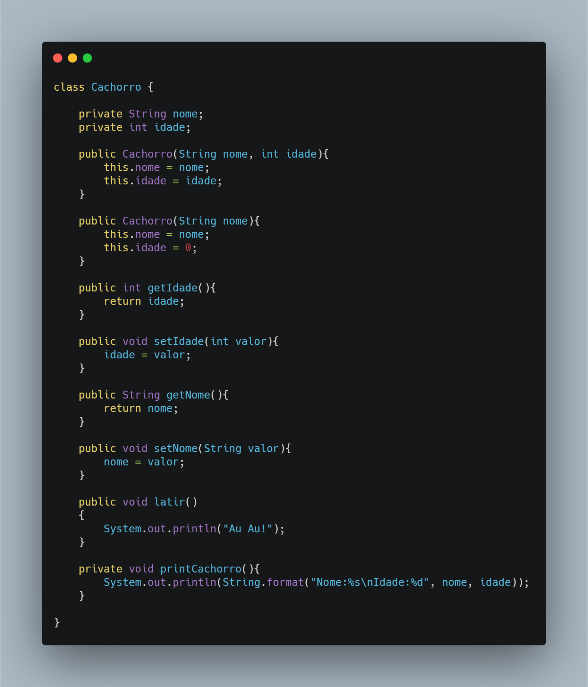

Prova de POO
Questão 01 - Qual a principal problemática que a programação orientada a objetos visa resolver?
- A falta de reutibilidade e confiabilidade dos códigos.
- A necessidade por linguagens com melhor desempenho.
- Estruturas de dados lentas
- O difícil controle/uso da memória
Questão 02 - Quais são os três pilares da POO?
- Estruturação, estilização e encapsulamento
- Polimorfismo, abstração e herança
- Herança, polimorfismo e encapsulamento
- Herança, estilização e abstração
Questão 03 - Marque a linguagem de programação que NÃO utiliza o paradigma de programação orientada a objetos.
- Java
- JavaScript
- Python
- C
Questão 04 - Qual a utilidade da herança?
- Reaproveitar atributos e métodos.
- Habilitar que um mesmo método apresente mais de um algoritmo.
- Impossibilitar que uma classe declare uma variável
- NENHUMA DAS ANTERIORES
Questão 05 - Considere o seguinte código em JAVA:

Quais dos seguintes nomes são atributos?
- Nome, idade
- Cachorro, getIdade
- latir, printCachorro
- getNome, setNome